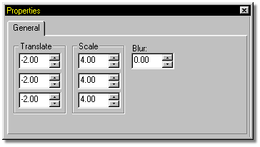
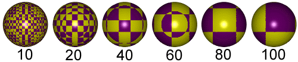
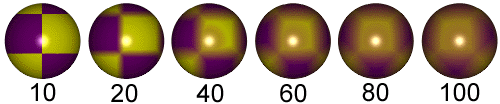

The type
Checkered combining has it's own set of adjustable attributes.

The X, Y, and Z Translate fields allow you to to move the checker texture through 3D space. While the immediate thought that comes to mind with checker materials is that they are flat, they are not. The checkered texture occupies a 3D space, and is actually 3D cubes of the colors you specify in the attributes.

Example Checker Scaling
The X, Y, and Z Scale fields allow scaling of the checkered texture in any of the three directions. If any of the parameters are set to "0", the axis degenerates to alternating slabs instead of checkers.

Example Checker Blurring
The default blur for checker is none, giving the texture hard edges. The higher the blur value, the more smeared the edges of the checker texture gets. At default, you are looking at a Z-translation of "0". If you set a blur, the checker pattern will seem to disappear. Set the Z-translate to some other number to get a non-blurred region of 3D space and the checkers will be visible.
Related Topics:
About Materials
Attributes
Turbulence
Gradient Combiner
Noise Combiner
Spherical Combiner